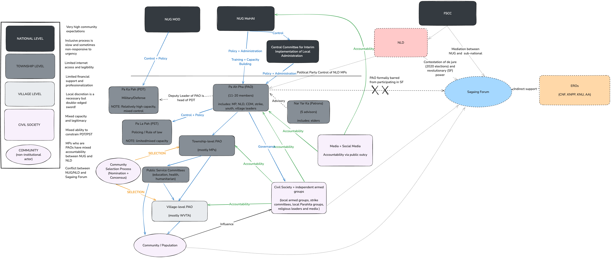

Rebel
governance concepts & mapping Sagaing’s local governance
Research / Theory
Rebel Governance
Institutions
There is a relatively rich literature on rebel governance. It is
clear (perhaps obvious) that rebels are often aspiring states, who
provide order to populations. However, theorizing both the causal
processes and the types of institutions remains a major area of inquiry.
There are three main actors: rebels, civilians, and the incumbent
state.
Arjona’s
Rebelocracy: rebel order, time horizons, and pre-existing
institutions
- In Rebelocracy: Social Order in Colombian Civil War (Arjona 2016)
provides evidence that insurgents provide order to civilians in most
cases. The main determinant of this is the time horizon of
rebels. If short, they do not provide order, but for most, a long-time
horizon is valuable as they need recruits, information, and other
resources.
- Rebels prefer direct control, as it allows
them to…
- gain territorial control
- create institutions which build organizational capacity
- elicit (punish) civilian (non-)cooperation
- Rebelocracy or Aliocracy: Rebel’s ability to
directly govern (rebelocracy) may be curtailed by the desirability of
incumbent institutions and the collective mobilization capacity, which
allow for collective action against the rebels. In these cases, rebels
agree to aliocracy.
- Collective action capability <—-> no collective action
capability
- Desirability of incumbent local institutions <—->
non-desirability (or disagreement over) incumbent local gov
- Ideology does not matter: Arjona argues that
ideology is epiphenomenal. Fundamentally a tool for power (i.e. akin to
a universal profit motive which drives different business strategies).
Rebel groups use whatever ideologies they think will be most effective
for garnering civilian support alongside institutional coherence
Beginning definitions and
concepts:
Rebel governance
- From Arjona, Kasfir, and
Mampilly (2017)
- Rebel governance is governance by a non-incumbent actor claiming a
legitimate role as a future sole government/regime during civil
war.
- From Kasfir pp. 21 in Arjona, Kasfir, and
Mampilly (2017) :
- Organizing civilians for a public purpose when a non-state armed
actor: 1) has territorial control, 2) a residential population, and 3)
violence or threat of violence.
- Kasfir emphasizes the importance of the ‘distance’ between rebels
and civilians, which sets the mode of interaction.
- The aim of rebel governance is varied: civilian encouragement,
civilian administration, organization for material gain (e.g. natural
resource extraction or industry).
Rebel organizations
- Coordinated groups who engage in violence to gain undispured control
over (a portion of) the pre-existing state.
- Rebels are those which involved directly in military action and/or
planning (including logistics and internal organization).
- Providing support external to the organization does not make a
civilian a ‘rebel’ (basically rebels are the army or government analog
of a ‘state’, which includes leaders, administrators, and the army)
Civil war
Though definitions vary, scholars generally agree that a civil war involves a protracted armed conflict that takes place within a recognized sovereignstate between parties subject to a common authority at the onset of fighting [@kalyvas2006logic]. kalyvas2006logic
- This is distinct from similar but distinct (‘cognate’)
phenomena:
- [riots, ethnic conflict not involving the state, domestic terrorism,
coups, genocide, criminal activities]
Necessity of political aim
Rebels have multiple end goals for gaining power. However, the civil
war must ultimately be political, challenging the incumbent state actor
at the beginning of the war.
- Ideologies (religious, economic, ethnic)
- Profit motives
- Power motives
Civilians
are at the heart of winning civil wars. Rebel governance is
optional.
The importance of civilian support has long been realized in civil
war (citing Mao 1963; Guevara 1968; Ahmad 1982; Laqueur 1976).
Civilian support, however, does not necessitate
governance
Civilians are both challenges and opportunities.
They are the ‘other’ actor which rebels and incumbents fight over.
- Provide
- [food, supplies, information, recruits].
- I’d add motivation, social support, and morale for insurgent
groups
- Threaten inverse of each of the above
- [food to enemy, supplies to enemy, information to enemy, recruits to
enemy]
Causal theories have become more materialist and realist
over time: In the introduction of Arjona, Kasfir, and
Mampilly (2017), they state that:
- Earlier work focused on insurgents competing for
civilian support with ideogloy and cultural values, while newer
work has focused on coercion and material incentives.
Establishing new governance is double-edged:
Providing governance seeks to ‘win over’ the population. However, this
process has both risk and reward (double edged):
- By deploying public goods, ideologies, and cultural beliefs, they
can cause the population to more closely identify with rebels
- However, changing existing institutions, norms, and beliefs via
coercion — if viewed as legitimate prior — creates a risk of
backlash.
Typology
of rebel political institutions (Mampilly & Stewart 2021)
(Mampilly & Stewart 2021)
provide a typology of rebel governance which goes beyond Arjona,
Kasfir, and Mampilly (2017)‘s single variable spectrum between
rebelocracy and aliocracy. Their typology reduces abstraction by
separating three factors which fall under Arjona’s initial distinction:
power-sharing, integration, and innovation. However, they also add
inclusion (no pun intended). Which adds a ’democratic’ dimension. Their
discussion also expands on the logic behind each. Notably, they
seemingly do not follow Arjona’s rejection of ideology as epiphenomenal.
#### Typology of rebel institutions:

- [power sharing, integration, innovation, inclusion]
- Power sharing: How much power do civilians have?
- military martial law <—–> complete civilian autonomy
- Integration: How ‘hands on’ are rebels in
governance?
- no integration <—–> full collaboration in governance
institutions
- Innovation: Are institutions co-opted or replaced?
- wholesale replace <—–> only co-opt existing
- Inclusion: Both % and identity inclusion
- minimal inclusion <—–> maximal inclusion
Rebel governance as a
stepwise process
Rebel groups make strategic/ideological decisions in a
stepwise fashion
STEP 1: Power-sharing:
Martial law <-> full civilian autonomy
This is a higher-order variable. If there is NO power-sharing,
then the other three are essentially at the minimum (no integration,
wholesale replace, and zero inclusion)
Benefits: full civilian control
Downside: costly (no work via agents) and
unpopular
Logics:
- population is not part of ‘imagined community’
- strong ideological preferences at odds with civilians
- strong, short-term security needs
Integration
of existing institutions: rebel participation in administration
- The degree an insurgent organization places itself within
administration bodies.
- Maximally, the rebel group could have a representatives at each
administrative level (alongside civilian)
- Minimally, the insurgents create boundaries (e.g. no support to
state), but otherwise do not interfere
- Benefits: Draw on legitimacy of pre-existing
institutions, block potential rivals from co-opting
- Downside: somewhat costly to integrate fully
- Logics:
- Less integration due to pre-existing social ties + alignment. If
there is very high trust + social ties between communities and rebels,
then little integration is needed (they can allow them to administrate
within rebel guidelines).
- More integration/co-option is needed when they need to surveil
administration, but do not want to be fully coercive (i.e. don’t want to
impose martial law).
Innovation: replace or
co-opt?
- Does the insurgent organization replace or co-opt?
- This can have both ideological and strategic motivations
- Benefits: Can transform institutions for strategic
or ideological (‘revolutionary’) alignment
- Downside: replacing can generate backlash
- Logics:
- Some groups are ideologically radical (‘revoluationary’), such as
fundamentalist Islamist. These aim to replace/innovate. However, they
may also balance the sequencing of this to be less threatening
(i.e. provide services first, institutional overhaul later).
- Non-revolutionary groups only follow strategic goals. That is, they
aim for resources and popular support.
Inclusion:
power sharing across population and identities
- Fundamentally a democratic principle.
- How ‘included’ are different identities (vertical or horizontal) in
governance processes?
- Includes majoritarian and group/minority concerns – not only how
many but if identities are excluded.
- Benefits: Similarly, both strategic (blocking or
including ethnic outgroups) and ideological (e.g. communists support
women’s inclusion)
- Downside: canonical puzzles of optimal inclusion
among groups for stability
- Logics:
- Some groups are ideologically radical (‘revoluationary’), such as
fundamentalist Islamist. These aim to replace/innovate. However, they
may also balance the sequencing of this to be less threatening
(i.e. provide services first, institutional overhaul later).
- Non-revolutionary groups only follow strategic goals. That is, they
aim for resources and popular support.
Map of Sagaing Governance
A quick diagram of institutions+actors in Sagaing Region post-coup in
resistance controlled areas (as of Dec 2024)

Arjona, Ana, Nelson Kasfir, and Zachariah Cherian Mampilly, eds. 2017.
Rebel Governance in Civil War. Cambridge: Cambridge University
Press.